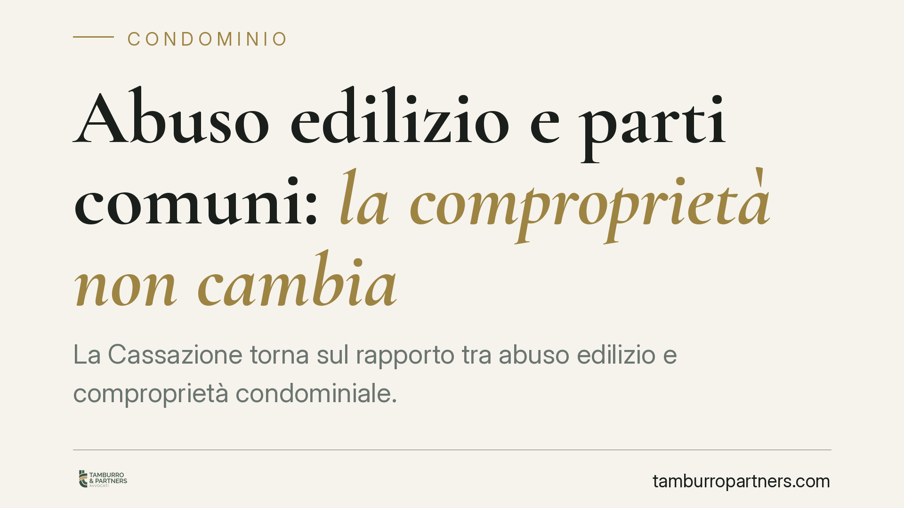

Abuso edilizio e parti comuni: la comproprietà non cambia
La Cassazione torna sul rapporto tra abuso edilizio e comproprietà condominiale. La regola è netta: un manufatto realizzato senza titolo non altera la qualificazione delle parti comuni ai sensi dell'articolo 1117 del Codice civile. Ciò che conta resta il titolo costitutivo e la destinazione funzionale del bene, non la sua conformità urbanistica. Una precisazione con effetti concreti per aggiudicatari, condomini e vicinato.

Il caso
La vicenda nasce da una controversia tra una proprietaria aggiudicataria di un immobile e il vicinato in ordine alla natura di un manufatto insistente su area condominiale. Dopo la pronuncia della Corte d'appello, la questione è approdata in Cassazione. Il punto controverso: la presenza di un abuso edilizio può modificare la qualificazione di una parte comune, escludendola dal regime della comproprietà?
La risposta della Corte è negativa. L'illiceità urbanistica di un'opera opera su un piano distinto rispetto alla titolarità del diritto di proprietà. Sono due profili che non si sovrappongono.
Inquadramento normativo
Il riferimento è l'articolo 1117 del Codice civile, che individua le parti comuni dell'edificio. La norma presume la comunione di determinati beni — suolo, fondazioni, muri maestri, scale, cortili, impianti — salvo che il titolo disponga diversamente. Si tratta di una presunzione legata a due elementi: il titolo costitutivo (l'atto da cui nasce il condominio, tipicamente il primo atto di frazionamento e vendita) e la destinazione funzionale del bene al servizio comune.
La Cassazione ribadisce che la qualificazione di una parte come comune dipende esclusivamente da questi due criteri. La conformità o difformità edilizia del manufatto è irrilevante ai fini della proprietà. In altri termini: un'opera abusiva realizzata su area comune resta comune; l'abuso genera responsabilità di natura amministrativa e, se del caso, penale, ma non trasferisce né estingue diritti reali.
È una distinzione dogmatica ma dalle ricadute molto pratiche. La sanabilità o demolizione del manufatto attiene al rapporto con la pubblica amministrazione; la titolarità del suolo su cui insiste resta governata dal diritto civile.
Implicazioni pratiche
Per chi acquista in asta un'unità immobiliare — come nel caso deciso — la presenza di abusi non fa venir meno la comproprietà sulle parti comuni. L'aggiudicatario subentra nel regime condominiale così come definito dal titolo, con i relativi diritti e oneri.
Per il vicinato e per gli altri condomini, il principio significa che non si può invocare l'abusività di un'opera per rivendicare una proprietà esclusiva su ciò che resta, per titolo e destinazione, comune. La strada corretta per contestare un manufatto abusivo passa dalla segnalazione all'autorità competente e, sul piano civile, dalle azioni a tutela della comunione o dei diritti dei condomini.
Per chi realizza opere su parti comuni, infine, la pronuncia è un monito: l'eventuale tolleranza o il decorso del tempo non trasformano l'abuso in un titolo di proprietà. Il bene resta comune e l'opera resta sanzionabile secondo la disciplina urbanistica.
Cosa fare in concreto
- Verifica il titolo costitutivo del condominio prima di qualunque contestazione: è il documento che stabilisce cosa è comune e cosa no, a prescindere dalla situazione urbanistica.
- Distingui i due piani: per le questioni di proprietà rivolgiti al giudice civile; per l'abuso edilizio segnala allo Sportello unico per l'edilizia del Comune.
- In caso di acquisto (anche all'asta) richiedi una due diligence documentale su titolo, regolamento condominiale e conformità edilizia delle parti comuni e private.
- Non confidare nella prescrizione dell'abuso: l'illecito urbanistico non consolida diritti reali e non modifica la qualificazione del bene.
- Documenta per iscritto ogni intervento su parti comuni, previa delibera assembleare quando richiesta, per evitare contestazioni future.
La lezione della Corte è chiara: la proprietà e la regolarità edilizia viaggiano su binari separati. Confonderli espone a strategie processuali destinate a non reggere.
---
*Contributo informativo a cura di Tamburro & Partners - Avv. Giuseppe Tamburro. Non costituisce parere legale.*
Ogni condominio ha una storia a sé.
Se gestisci un'amministrazione e vuoi un confronto su una specifica questione condominiale, scrivi allo studio. Ti rispondiamo entro un giorno lavorativo.